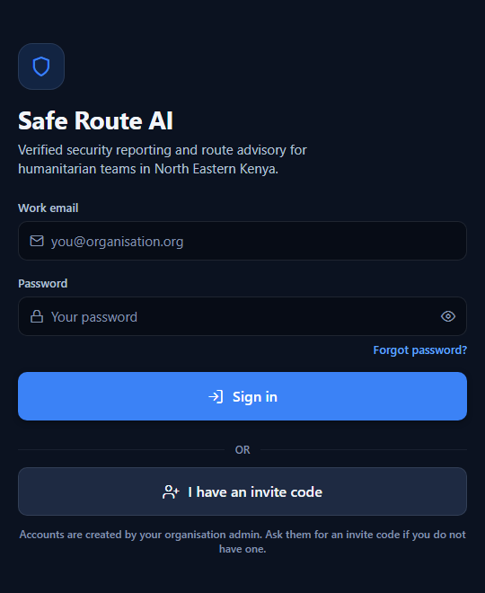

[ENTER YOUR FULL NAME]
[ENTER YOUR REGISTRATION NUMBER]
This project is submitted in partial fulfillment of the requirements for the award of Bachelor of Science in Computer Science.
Faculty of Computer Science
[ENTER YOUR UNIVERSITY]
[ENTER CAMPUS / TOWN], Kenya
[ENTER MONTH, YEAR]
This thesis is available for library use on the understanding that it is copyright material and that no quotation from the thesis may be published without proper acknowledgment.
I, [ENTER YOUR FULL NAME], hereby declare that this document is entirely my own work and has not been submitted to any university or institution for the award of a degree. To the best of my knowledge, it does not include any material information authored or published by others except where due acknowledgement has been made in the text.
Student's signature:
Name....................................................................... Signature............................................
Date................................................
This system project has been submitted for examination with my approval as university Supervisor.
Supervisor's signature:
Signature............................................ Date..............................................
[ENTER SUPERVISOR'S NAME]
[ENTER YOUR UNIVERSITY], Kenya
This project is wholeheartedly dedicated first and foremost to Almighty God, by whose grace all things are possible. To my family, whose steadfast love, encouragement and support have been my constant source of strength. I also extend my deepest gratitude to my lecturers and mentors, whose wisdom and guidance laid the groundwork for this achievement. To my friends and classmates who continued to encourage me, thank you.
Above all, this work is dedicated to the humanitarian workers who travel the roads of Garissa, Wajir and Mandera to deliver assistance to communities that need it, and who accept real personal risk in order to do so. If this system helps even one team avoid one dangerous road on one day, it will have been worth building.
I hereby express my gratitude to [ENTER SUPERVISOR'S NAME], whose continuous feedback and guidance assisted in the successful completion of this project on time. I also extend heartfelt thanks to all those who played a vital role in turning this idea into reality.
I am grateful to the dedicated members of the Computer Science Department for their mentorship and technical insights. Their in-depth knowledge of software engineering principles and practical approaches significantly influenced the system's structure, security model and overall performance.
I would further like to acknowledge the humanitarian and security practitioners who gave their time to explain how security information actually moves between field teams, and who were candid about where existing practice fails them. Their input shaped the central design decision of this project: that no threat reaches a field worker without a named human being having approved it.
This project continues to be a work in progress, and I remain committed to improving it further based on user feedback and future research opportunities.
Humanitarian organisations operating in North Eastern Kenya deliver assistance in an environment shaped by armed incidents, road ambushes, banditry and inter-communal conflict. Security information in this environment exists, but it moves informally, through telephone calls, radio and private messaging groups. Three failures follow from that informality. Information does not reliably reach the people it concerns, so a convoy may depart on a road whose danger is already known to another team. Unverified rumour circulates with the same authority as confirmed fact, so a corridor may be closed unnecessarily or, worse, trusted wrongly. Finally, nothing is auditable: after an incident there is no reliable record of who knew what, or when.
This project presents the design, development and testing of Safe Route AI, a cross-platform mobile application that centralises security threat reporting for humanitarian teams. The system implements a single closed operational loop: Report, Analyse, Verify, Alert and Protect. Field workers submit threat reports that are captured on the device before any network call is attempted, so the system remains usable where coverage is absent. Each report is analysed automatically to propose a threat classification, a severity level and an alert radius, and to flag probable duplicate reports of the same event. That analysis is advisory only. A designated security officer must confirm or override every field before a threat becomes visible to the field, and this constraint is enforced by database policy rather than by the user interface. Once verified, the system performs a geospatial fan-out that notifies affected workers according to four rules: shared organisation, cross-organisation partnership, physical proximity to the incident, and declared operating region. Workers additionally receive a threat map, a comparative safe-route advisory that scores candidate routes against verified incidents near them, and a one-touch emergency SOS facility.
The application supports three user roles with deliberately separated authority: Humanitarian Worker, Security Officer and Organisation Administrator. An administrator creates and manages accounts but is explicitly prevented from verifying reports or issuing alerts, so that the authority to publish a threat and the authority to grant that power are never held by the same account. The system was developed using React Native and the Expo framework for cross-platform mobile delivery, with a cloud backend built on PostgreSQL and the PostGIS spatial extension, providing authentication, row-level authorisation, real-time synchronisation and spatial query capability. Security is enforced through twenty-two row-level security policies, nineteen database functions and twelve triggers, supported by an append-only audit log that no client account can write to or suppress. Reporter identity is removed and incident positions are deliberately offset before a report is shown to a peer, protecting reporters from retaliation.
The system was validated through one hundred and forty-nine automated assertions across three independent test suites covering application logic, authorisation boundaries and end-to-end integration against a live database. All assertions passed. Testing confirmed that unverified reports cannot reach the field, that administrators cannot exercise officer authority, that reporter identities are not disclosed to peers, and that submissions are never duplicated when retried after a network failure. By digitising the reporting and verification chain, Safe Route AI improves the timeliness and reliability of security information, protects those who report it, and produces a defensible record of every decision taken.
Keywords: Humanitarian Security, Threat Reporting, Human Verification, Geospatial Alerting, Safe Route Advisory, Offline-First Mobile Applications, Row-Level Security, React Native, PostGIS, North Eastern Kenya.
Humanitarian assistance in Kenya's arid and semi-arid north east is delivered in a security environment that is neither stable nor predictable. Garissa, Wajir and Mandera counties sit along a porous border with Somalia, and organisations working there contend with armed incidents, roadside ambushes, banditry, inter-communal conflict over pasture and water, and the operational consequences of a continuing Al-Shabaab presence. The International NGO Safety Organisation (INSO), which has monitored the Kenyan context since 2012 and now does so through its Horn of Africa platform, characterises the threat picture facing non-governmental organisations in the central, northern and north-eastern regions as a combination of frequent criminality, politically motivated and inter-communal violence, and attacks by organised armed groups (INSO, 2024).
These conditions are not peculiar to Kenya, and the global trend is adverse. Humanitarian Outcomes, which maintains the Aid Worker Security Database, reported that major attacks on aid workers rose by thirty-six per cent in 2024 compared with 2023, with victims rising by thirty-seven per cent and fatalities by thirty-one per cent. Major violent incidents were recorded in forty countries in 2024, up from thirty-three the previous year (Humanitarian Outcomes, 2025). The organisation's provisional data for the first half of 2025 suggested that these figures were on course to break records again. Against this background, the quality and speed of security information available to a field team is not an administrative convenience; it is a determinant of whether staff are exposed to avoidable harm.
Security information does exist in these operating environments. What is lacking is a dependable mechanism for moving it. In practice, information travels by telephone call, two-way radio, SMS and private messaging groups. The third edition of Good Practice Review 8, the standard reference work on humanitarian security risk management, observes that where formal interagency coordination mechanisms are absent, informal networks frequently emerge for sharing information and advice, often using online or SMS-based platforms (Humanitarian Outcomes, 2025b). Such networks are valuable and are often the only thing available, but they have structural weaknesses. Membership is arbitrary rather than determined by who is actually at risk. Messages are not addressed by geography, so a worker travelling towards an incident may not be in the group that heard about it. Nothing distinguishes a confirmed report from a rumour repeated at third hand. And because the record is a chat history rather than a register, there is no reliable account afterwards of what was known and when.
The consequences of these weaknesses are practical. A team may depart on a route where an ambush occurred that morning because the message describing it reached a different office. Conversely, an unverified report may cause a corridor to be suspended for several days, interrupting the delivery of assistance to communities that need it, when no incident in fact occurred. Egeland, Harmer and Stoddard (2011), in the OCHA study To Stay and Deliver, argued that humanitarian organisations operating in complex security environments must move from reactive avoidance towards systematic risk management supported by disciplined information practice. Their conclusion, drawn from six field studies, two hundred and fifty-five practitioner interviews and a survey of over eleven hundred national staff, was that the capacity to stay and deliver depends on the quality of an organisation's security management, not merely on the severity of the threat.
Mobile technology presents a credible route to closing this gap. Smartphone penetration among humanitarian field staff in Kenya is high, devices already accompany workers into the field, and modern mobile platforms provide accurate positioning, background notification and offline storage as standard capabilities. At the same time, geospatial database technology makes it computationally inexpensive to answer the question that matters most in this domain: which of my colleagues is close enough to this incident to need to know about it right now? What has been missing is not the technology but a design that treats verification, rather than speed alone, as the central requirement.
This project therefore proposes and implements Safe Route AI, a mobile application that structures security information into a single accountable loop. Workers report; the system analyses and proposes a classification; a named security officer verifies; the system alerts precisely those workers whom the incident affects; and workers act on a threat map and a route advisory grounded only in verified information. The system is designed for an environment where connectivity is intermittent, where reporters face genuine risk of retaliation, and where the record of who authorised what must survive scrutiny after an incident.
Humanitarian organisations operating in North Eastern Kenya lack a reliable, accountable mechanism for collecting security threat information from field staff, confirming it, and delivering it to the specific people it endangers. Existing practice depends on informal channels whose reach is determined by group membership rather than by exposure to the threat. As a result, information that would have prevented a team from travelling on a dangerous road frequently fails to reach that team in time.
A second and related problem is that informal channels carry no concept of verification. A first-hand account and an unsubstantiated rumour arrive in the same form and with the same apparent authority. Organisations are therefore forced to choose between acting on unconfirmed information, which causes unnecessary suspension of operations and erodes trust in future warnings, and delaying action pending confirmation, which exposes staff during the interval. Neither choice is satisfactory, and the absence of an explicit verification step means the choice must be made repeatedly and informally by whoever happens to receive the message.
A third problem concerns the safety of those who report. Workers who report incidents involving armed actors in the areas where they live and work face a real risk of retaliation if their identity becomes known. Where reporting is not structurally anonymous with respect to peers, staff rationally under-report, and the information base on which all other decisions rest is quietly degraded. Good Practice Review 8 identifies data theft and surveillance among the digital threats that contemporary security risk management must address (Humanitarian Outcomes, 2025b), which makes the technical design of anonymity a security requirement rather than a privacy preference.
Finally, the absence of an auditable record undermines accountability. When an incident affects staff, an organisation must be able to establish what information existed, who assessed it, what decision was taken and when. Chat histories and call logs cannot support that reconstruction, and they can be edited or deleted. Existing digital tools in this space are largely advisory bulletins or generic incident registers; they do not combine field reporting, mandatory human verification, geographically targeted alerting, offline resilience and tamper-evident audit in a single system. This gap is what the present project addresses.
To design, develop and test a mobile-based security threat reporting and safe route advisory application for humanitarian organisations in North Eastern Kenya that ensures every alert delivered to field staff has been verified by an authorised human officer, is targeted to those actually affected, and remains usable where network connectivity is intermittent.
Humanitarian workers in North Eastern Kenya continue to face avoidable exposure to security incidents because the information that would protect them moves too slowly, reaches the wrong people, or arrives without any indication of whether it can be trusted. These are not abstract inefficiencies. They translate into teams travelling on roads where incidents have already occurred, into operations suspended on the strength of rumours, and into staff who stop reporting because reporting feels personally unsafe.
Existing systems address parts of this problem. Interagency platforms such as INSO provide high-quality analysis and periodic reporting to member organisations, and generic incident-management tools allow organisations to keep registers. However, no widely available system combines reporting from the field, an explicit and enforced human verification gate, alerting targeted by actual geographic exposure, and operation without connectivity. This project delivers that combination in a single application.
The project is also justified on methodological grounds. It applies core software engineering practice — requirements elicitation, structured system design, iterative implementation, layered automated testing and controlled deployment — to a domain where the cost of a defect is measured in physical risk to people rather than in inconvenience. That constraint materially changed the design. It is the reason verification is enforced in the database rather than the interface, the reason the application never shows an empty map when data is merely stale, and the reason the audit log is append-only. The project therefore serves as a practical demonstration of security-conscious system design applied to a real humanitarian problem.
This project delivers a cross-platform mobile application, Safe Route AI, targeted primarily at Android devices used by humanitarian field staff, with a functional web build for supervisory use. The system covers three user roles: Humanitarian Worker, Security Officer and Organisation Administrator. It supports the full operational loop of reporting a threat, automated advisory analysis of that report, mandatory verification by a security officer, geographically targeted alerting of affected workers, a threat map, a comparative safe route advisory and an emergency SOS facility with a live location broadcast and an officer response console. It further supports multi-organisation operation with reciprocal cross-sharing partnerships, invite-gated account creation, and an append-only audit log.
The system is built using React Native with the Expo framework for the client, and PostgreSQL with the PostGIS spatial extension for the backend, together with managed authentication, row-level authorisation, real-time subscriptions and file storage. Geographic coverage for the reference deployment is the three North Eastern counties of Garissa, Wajir and Mandera, together with their constituent sub-counties.
The project does not implement financial transactions, procurement, logistics management, staff human-resource records or case management for beneficiaries. It does not attempt automatic threat detection from external data feeds, satellite imagery or social media monitoring. It does not replace an organisation's formal security management structure or its obligations under its own security policy: the application is a tool used by that structure, not a substitute for it.
This project was developed as an academic prototype within a constrained timeframe and budget, and several limitations follow from that. Testing was conducted with a limited number of participants and devices rather than through a full field pilot with an operating humanitarian organisation, so performance and usability under sustained real-world load were not exhaustively evaluated.
The automated classification component is implemented as a deterministic lexical analyser operating on report narratives. It produces the same output structure that a large language model service would produce, and the system is designed so that such a service can be substituted without altering the interface or the verification workflow. However, the production language-model integration was not deployed within the project period because it requires a paid commercial inference service. This limitation does not affect safety, because the design treats all automated analysis as advisory and requires human confirmation regardless.
Route geometry is currently constructed from surveyed road corridor data rather than retrieved from a commercial directions service. The risk analysis applied to each route is genuine and operates on real verified incident data, but the turn-by-turn geometry would become more precise if a routing provider were connected. Background location broadcasting while the application is fully closed, photographic evidence upload to object storage, and a second-officer countersigning interface for critical reports are specified and partially supported at the database level but were not completed as user interfaces within the project period.
Finally, the system depends on the willingness of organisations to share threat information with partners and on the discipline of officers to verify reports promptly. These are organisational rather than technical variables, and no software design can fully compensate for their absence.
This chapter established the context in which the project was undertaken. Humanitarian organisations operating in Garissa, Wajir and Mandera face a deteriorating global security picture for aid workers and rely on informal channels that distribute security information by group membership rather than by exposure. The chapter identified four specific failures of current practice: information does not reach those affected, verified and unverified information are indistinguishable, reporters are not structurally protected from retaliation, and no auditable record of decisions exists. It stated the general objective of building a verified, targeted and offline-resilient mobile alerting system, together with four specific objectives and the corresponding research questions. It set out the justification for the work, defined the scope of the delivered system across three user roles and the full report-to-protect loop, and acknowledged the limitations arising from the project's academic setting. The following chapter reviews existing literature and systems in this domain and identifies the gaps that the proposed system addresses.
A literature review examines what researchers and practitioners have already established in a field, in order to identify what is known, where the gaps lie, and why further work is warranted. For a system development project the review is not merely background: it is the evidential basis for the design decisions that follow. This chapter examines the literature on humanitarian security risk management, the documented weaknesses of current security information practice, and the digital systems that have been deployed to address them.
The review is organised to follow the study's objectives. It first examines the challenges organisations face in managing security information using existing methods. It then reviews existing security reporting and alerting systems and identifies their functional limitations. It proceeds to the literature informing the design and implementation of a mobile verified-alerting system, and concludes with the testing and evaluation considerations appropriate to a system of this kind. Together these establish the academic and technical foundation for Safe Route AI.
The dominant finding across the humanitarian security literature is that operational security information circulates through channels that were never designed for the purpose. Good Practice Review 8, first published in 2000 and revised in a third edition in 2025, remains the standard reference on humanitarian security risk management. It notes that where formal interagency security coordination mechanisms are absent, informal networks frequently emerge for sharing information and advice, often using online or SMS-based platforms (Humanitarian Outcomes, 2025b). The review treats these networks as a genuine and often indispensable resource, but their structure imposes limits that no amount of diligence can overcome.
The principal structural limit is that distribution is determined by membership rather than by exposure. A messaging group reaches the people who happen to have been added to it. It does not reach the driver who is on the road towards the incident but works for a partner organisation, nor the field officer who joined the team last week. Egeland, Harmer and Stoddard (2011) found, across six field studies in complex security environments, that organisations frequently possessed relevant security information somewhere within their structure but failed to route it to the staff whose movements it should have altered. The failure they identified was one of distribution rather than collection.
A second limit is that informal channels do not persist usable structure. A threat reported in a voice call exists only in the recollection of the participants. A message in a chat group is retrievable in principle but is not indexed by location, severity or type, and is quickly displaced by subsequent traffic. INSO's own practice illustrates the alternative: the organisation collects information on conflict and security incidents from partner NGOs, field monitors, the United Nations, local communities and open sources, and publishes it in a structured dashboard organised by location, incident type and perpetrator, updated monthly (INSO, 2024). The contrast between a structured, queryable register and an undifferentiated message stream is precisely the contrast this project seeks to exploit at organisational level.
Where information arrives without provenance or assessment, organisations must decide how much weight to give it, and both possible errors are costly. Acting on an unverified report can suspend movement on a corridor that was never dangerous, interrupting delivery of assistance and consuming scarce operational capacity. Declining to act on a report that later proves accurate exposes staff directly.
The literature on humanitarian access treats this as a central problem of security management rather than a peripheral one. Egeland, Harmer and Stoddard (2011) argued that organisations able to remain operational in insecure environments were distinguished by systematic risk management practice, including disciplined assessment of information, rather than by facing milder threats than those that withdrew. The third edition of Good Practice Review 8 extends this reasoning into the digital domain, adding new treatment of mis-, dis- and malinformation alongside data theft and surveillance as security concerns in their own right (Humanitarian Outcomes, 2025b). The implication for system design is direct. A platform that merely accelerates the circulation of unassessed reports increases the rate at which both kinds of error are made. Verification must be a designed-in stage, not an optional practice layered on afterwards.
This conclusion motivates one of the principal design commitments of the present project. In Safe Route AI, a report is inert until a security officer has confirmed its classification, severity and alert radius, and this constraint is enforced by database authorisation policy rather than by the client application. A client that bypassed the interface entirely would still be unable to publish an unverified threat.
Three further constraints recur in the literature and materially shaped the design of this system. The first is connectivity. Arid and semi-arid regions of northern Kenya have uneven mobile coverage, and the moments of greatest operational interest — a vehicle stopped on a remote road, a team at a distant distribution point — are frequently the moments when coverage is absent. Any system that requires a network round trip before accepting a report will fail precisely when it is most needed.
The second is reporting reluctance. Staff who live and work in the communities where incidents occur face credible risk of retaliation if they are identified as the source of a report concerning armed actors. Egeland, Harmer and Stoddard (2011) documented the disproportionate exposure of national staff in complex environments, and the Aid Worker Security Database consistently records national staff as the majority of victims in recorded incidents (Humanitarian Outcomes, 2025). Where anonymity is not structurally guaranteed, rational under-reporting follows, and the resulting gaps are invisible to the organisation.
The third is accountability. When staff are harmed, organisations face internal, donor and sometimes legal scrutiny of what was known and what was done. Good Practice Review 8's third edition broadens its scope explicitly to include duty of care and governance structures (Humanitarian Outcomes, 2025b), which presupposes a record capable of supporting review. Informal channels cannot provide it: chat histories are editable, deletable and unstructured. A defensible record requires an append-only log that records the actor, the action and the prior state, and that no ordinary account can alter.
Several categories of system currently serve parts of this problem space. The first comprises interagency security platforms, of which INSO is the most significant in the Kenyan context. INSO has maintained a monitoring presence in Kenya since 2012, operating since 2018 within its Horn of Africa platform, and provides partner NGOs with four services: reporting, training, crisis management and coordination (INSO, 2024). Its analytical products are authoritative and its incident dashboard is structured and regularly updated. However, INSO's function is analysis and coordination across organisations, on a reporting cycle measured in days and months. It is not, and does not attempt to be, a real-time intra-organisational alerting channel that notifies an individual driver that an incident has occurred on the road ahead.
The second category comprises crowdsourced incident mapping platforms, of which Ushahidi — developed in Kenya following the 2007–2008 post-election violence — is the best known. Ushahidi demonstrated convincingly that distributed reporting via mobile devices can produce a usable geographic picture of events at speed, and its architecture has been reused widely. Its design goal, however, is breadth of collection and public visibility. Verification in such deployments is typically advisory and post hoc rather than a mandatory gate, and the public orientation of the platform is at odds with the confidentiality requirements of organisational security management.
The third category comprises general-purpose incident management and duty-of-care products used by international organisations for staff tracking, travel risk management and incident registration. These offer structured records and, in some cases, mass notification. They are typically designed for organisations with continuous connectivity and centralised security departments, are commercially licensed at a cost that places them beyond the reach of smaller national organisations, and treat alerting as a broadcast to a predefined distribution list rather than as a geospatial computation over current staff positions.
Reviewed against the operating conditions described in section 2.2, existing systems exhibit four recurring limitations.
The first is dependence on connectivity. Platforms built on a request-response web model assume a network at the moment of interaction. Where a report must be filed from a location without coverage, such systems either lose the report or require the user to remember to resubmit it later, which in practice means the report is not filed at all.
The second is undifferentiated distribution. Alerting in most reviewed systems is a broadcast to a list. Recipients therefore receive material irrelevant to their location and duties, and the predictable consequence is alert fatigue: when most notifications do not concern the recipient, all notifications are eventually ignored, including the one that mattered.
The third is weak or absent separation of duties. Where a single administrative role can both configure the system and publish operational warnings, the record cannot demonstrate that an independent assessment occurred. This is a well-established principle in information security practice, reflected in the access control and accountability requirements of international standards for system quality (ISO/IEC 25010, 2011), but it is inconsistently applied in incident reporting tools.
The fourth is inadequate protection of reporters. Systems that display a reporter's identity alongside a report, or that store precise coordinates accessible to all users of an organisation, expose the reporting individual. Where the recorded event involves armed actors operating locally, that exposure is a safety matter.
Synthesising the above, five gaps emerge that the present project addresses directly.
The architecture adopted for this project separates the client application from the authorisation boundary. Conventional mobile architectures place business rules in the application and treat the server as a data store. That arrangement is inappropriate where the rules being enforced are safety-critical, because the client is under the control of the user and can be replaced. The design therefore places every rule that matters — who may verify a report, who may see a reporter's identity, who may issue an alert — inside the database as row-level authorisation policy. Sommerville (2016) describes this general principle as designing for the assumption that the environment outside the trusted boundary is hostile; the present system applies it by treating the mobile client as untrusted.
React Native with the Expo framework was selected for the client because it provides a single codebase targeting Android, iOS and the browser, together with first-class access to device positioning, notifications, secure credential storage and local persistence. For a project whose users are equipped with heterogeneous and often low-specification Android devices, a single maintainable codebase is a practical necessity rather than a convenience.
PostgreSQL with the PostGIS extension was selected for the backend because the central computational question of this system is spatial. Determining which workers fall within an alert radius, which verified incidents lie within a given distance of a proposed route, and which reports are close enough in space and time to be probable duplicates are all spatial queries. PostGIS answers them directly and, with appropriate spatial indexing, efficiently. The managed platform additionally supplies authentication, row-level security, real-time subscriptions and storage, which allows the project to concentrate its effort on the domain logic rather than on infrastructure.
The system's three functional modules are joined by a single data flow rather than operating independently. The reporting module produces a record in a pending state. The verification module is the only path by which that record may leave the pending state, and the act of verification triggers the alerting computation within the same transaction boundary. The advisory module then draws exclusively on records that have completed that path. This arrangement means that the guarantee established at the verification gate — that a human officer assessed this threat — propagates automatically to every downstream consumer of the data, including the threat map, the route advisory and the analytics available to administrators.
Four benefits are anticipated. Timeliness improves because a verified report reaches affected staff through an automatic computation rather than through a sequence of telephone calls. Precision improves because recipients are determined by exposure, which both increases the probability that the right person is warned and reduces the alert fatigue that undermines warning systems over time. Reporting rates are expected to improve because anonymity with respect to peers is structural rather than promised. Finally, accountability improves because the organisation acquires a tamper-evident record of what was reported, who assessed it, what they changed and when they acted.
Functional testing verifies that the implemented system satisfies its specified requirements. Pressman and Maxim (2015) describe a layered approach proceeding from unit tests of individual components, through integration testing of their interactions, to validation testing against user-visible requirements. This project applies that structure, with unit testing concentrated on the geospatial computation, the classification analyser and the validation schemas, where correctness is objectively checkable against known values.
Because the authorisation boundary is the principal safety mechanism of this system, it required a testing approach of its own. Authorisation testing in this project is conducted not by inspecting policy definitions but by authenticating as real users of each role using the public client credential and attempting operations that the policies are intended to forbid. A test passes only when the operation is refused. This approach treats the security model as a black box and verifies the property that actually matters, namely that the prohibited action fails, rather than the weaker property that a policy exists which appears to prohibit it. ISO/IEC 25010 (2011) identifies confidentiality, integrity and accountability as constituent characteristics of software security, and the suite is organised to exercise each.
Reliability testing for this system concentrates on behaviour under degraded connectivity, since that is the system's expected operating condition rather than an exceptional one. The test approach exercises submission while offline, restoration of connectivity, retry behaviour, and the idempotency guarantee that a report retried after an ambiguous failure does not become two reports. Usability evaluation addresses the conditions of actual use: operation in low light, with one hand, in a moving vehicle and under stress.
This chapter reviewed the literature and existing systems relevant to humanitarian security information management. It established that security information in contexts such as North Eastern Kenya circulates predominantly through informal channels whose reach is governed by group membership rather than by exposure to the threat, and that this produces both missed warnings and unnecessary operational suspension. It showed that the standard reference literature on humanitarian security risk management treats disciplined assessment of information, duty of care and, increasingly, digital threats such as data theft and surveillance as central concerns. Reviewing existing platforms — interagency analysis services, crowdsourced mapping systems and commercial incident management products — the chapter identified five consistent gaps: verification is not enforced, distribution is by list rather than by exposure, connectivity is assumed, reporter identity is not structurally protected, and audit records are not tamper-evident. These five gaps define the requirements that the system described in the following chapters was built to satisfy.
This chapter presents the methodology adopted in developing Safe Route AI. It describes the software development approach, the tools employed and the phases followed in producing a functional system that addresses the security information challenges identified in the preceding chapters. Because the project integrates several interdependent concerns — offline field reporting, automated advisory analysis, human verification, geospatial alerting and route advisory — a flexible and iterative approach was necessary to accommodate refinement at every stage. The Agile software development methodology was therefore adopted.
Agile emphasises flexibility, collaboration and incremental delivery. It prioritises producing a working version of the system early and improving it through continuous feedback, rather than attempting to specify the entire system in advance. Unlike sequential models such as Waterfall, Agile divides development into short cycles known as iterations or sprints, each producing a usable increment of the system (Agile Alliance, 2023).
Agile was particularly appropriate for this project for three reasons. First, the requirements in this domain were not fully knowable at the outset. The decision that the alert fan-out should exclude the reporter, for example, only became obvious once the system was exercised end to end and it became apparent that alerting someone about their own report produces noise rather than safety. Second, several of the system's most important properties are failure-mode properties — what happens when the network disappears mid-submission, what happens when two people report the same ambush — and these are discovered by building and probing rather than by specification. Third, the safety-critical nature of the domain rewarded short cycles with testing at the end of each, because a defect in the authorisation model is not an inconvenience but a potential exposure of a reporter's identity.
Sommerville (2016) notes that iterative approaches are best suited to systems whose requirements are expected to change and where early delivery of partial functionality has value. Both conditions held here. The methodology also aligned with the project's testing philosophy: each sprint concluded with the extension of an automated test suite, so that the guarantees established in one iteration could not be silently broken by the next.
Figure 3.1 Agile Development Methodology
Development followed six phases: requirements gathering, design, development, testing, deployment and review. Each contributed incrementally to the overall objectives, and the cycle was repeated across four sprints.
Requirements were identified through a combination of stakeholder consultation and review of the humanitarian security literature. Consultation covered field workers, security officers and organisation administrators, and focused on how security information currently moves, where it fails, and what each role would need from a replacement. The literature review, drawing principally on Good Practice Review 8 (Humanitarian Outcomes, 2025b) and To Stay and Deliver (Egeland, Harmer and Stoddard, 2011), supplied the conceptual framing of verification, duty of care and information discipline.
Requirements were structured into four modules: a Reporting module supporting offline capture; an Analysis module producing advisory classification and duplicate detection; a Verification and Alerting module implementing the human gate and the geospatial fan-out; and an Advisory module providing the threat map, route comparison and SOS. The iterative approach permitted continuous refinement of these requirements as the implications of each became clear during construction.
The design phase translated requirements into a structured system model. Data modelling established nine principal entities and the relationships between them. Critically, the design phase determined that the authorisation boundary would be placed in the database rather than the application, on the reasoning set out in section 2.4.1. This decision preceded implementation and shaped everything that followed: it required designing the schema so that each rule could be expressed as a row-level policy, and it required that the reporter-anonymised view of a report be a distinct database object rather than a filtered response assembled by the client.
Interface design focused on the conditions of actual use. A dark-first colour scheme was adopted because the application is used at night and in vehicles, where a bright screen is both uncomfortable and a personal security exposure. The severity colour ramp was computed rather than chosen, and validated for colour-vision deficiency, as described in section 5.5.
Development proceeded in four sprints, each producing a functional increment. The first sprint implemented authentication, the role-based navigation structure and the reporting flow against an in-memory data layer. The second implemented the verification queue, the advisory classifier and the alert fan-out. The third implemented the threat map, route advisory and SOS. The fourth replaced the in-memory data layer with the live PostgreSQL backend, implementing the schema, the row-level security policies, the triggers and the spatial functions.
The decision to build against an in-memory implementation first proved significant. It allowed the entire application to be developed, exercised and tested before any backend existed, and it left the project with a permanent capability to run without infrastructure — useful for demonstration and for testing the offline paths deliberately. Both implementations satisfy the same interface, and the application selects between them through a single configuration value.
Testing was conducted at the conclusion of each sprint and accumulated into three permanent suites. Unit testing verified individual components, principally the geospatial calculations against known distances, the classification analyser against realistic report narratives, and the validation schemas. Authorisation testing authenticated as real users of each role and attempted forbidden operations, asserting that each was refused. Integration testing exercised the complete loop — report, verify, fan out, receive — against the live database.
Particular attention was given to degraded connectivity, since intermittent coverage is the expected operating condition rather than an exceptional one. The test approach exercised submission while offline, restoration of connectivity, retry behaviour and idempotency under ambiguous failure.
Once the system passed testing, it was packaged as a signed Android application using a cloud build service and distributed to test users via a direct download link. Deployment followed Agile principles by releasing incrementally rather than waiting for completion, allowing core features to reach users early for practical validation. The backend was deployed as a managed cloud project with migrations applied in sequence, and every migration was written to be re-runnable so that the schema could be rebuilt deterministically.
Each sprint concluded with a review examining user feedback, system behaviour and defects discovered. Several significant design changes originated in review rather than in specification. The exclusion of the reporter from their own alert fan-out, the decision to serve stale cached threat data with a visible timestamp rather than an empty state, and the addition of an agreement-rate metric to detect rubber-stamping of automated suggestions all emerged from reviewing the system in operation. This is the characteristic benefit of the Agile review phase: properties that are difficult to specify in advance become obvious once the system can be observed.
The Agile software development methodology was adopted because it accommodates evolving requirements, delivers working increments early, and integrates testing into each cycle rather than deferring it. Through six phases — requirements, design, development, testing, deployment and review — repeated across four sprints, the project progressed from an interface-complete prototype running on an in-memory data layer to a fully deployed system backed by a live PostGIS database with enforced row-level authorisation. The methodology's emphasis on iteration proved essential, since several of the system's most important behaviours were discovered through observation rather than specification.
This chapter describes the process of requirements gathering and analysis for Safe Route AI. The objective of this phase was to identify and evaluate the needs of the three user groups within the humanitarian security workflow — field workers, security officers and organisation administrators — in order to develop a practical, user-centred and operationally realistic system.
Requirements were collected through a mixed approach combining structured questionnaires, semi-structured interviews and a review of the humanitarian security literature. The process concentrated on identifying where existing informal practice breaks down: where information fails to reach those affected, where unverified material is acted upon, where staff decline to report, and where no record survives for later review. The insights obtained informed the system's architecture, its authorisation model, its database structure and its role-based functionality.
A mixed-methods approach was adopted. Quantitative data was collected through structured questionnaires administered to each of the three user groups, producing distributions that could be summarised and compared. Qualitative data was collected through semi-structured interviews, allowing participants to describe specific incidents and explain the reasoning behind their current practice.
The combination was necessary because the two forms of data answer different questions. Questionnaire responses establish how widespread a practice is — for example, what proportion of workers receive security information primarily through messaging groups. Interviews establish why, and what the consequences are. The decision to make reporter anonymity a structural property of the data layer rather than a policy commitment, for instance, followed directly from interview material in which workers described specific circumstances in which they had declined to report.
Both primary and secondary data collection methods were employed, enabling cross-verification and improving the reliability of the findings.
Primary data was collected directly from stakeholders through structured questionnaires and semi-structured interviews. Participants were asked about current communication channels, the perceived reliability of the information they receive, their confidence that warnings reach everyone affected, their experience of verifying reports, and their willingness to report under varying conditions of anonymity.
Secondary data collection involved reviewing published studies, sector guidance and incident data. Good Practice Review 8 (Humanitarian Outcomes, 2025b) supplied the framing of security risk management, duty of care and digital threat. The Aid Worker Security Report (Humanitarian Outcomes, 2025) supplied quantitative context on the scale and trajectory of violence against aid workers. INSO (2024) supplied context-specific detail on the Kenyan threat picture and on how interagency security information is currently structured and distributed.
The main techniques used were:
Primary data collection focused on obtaining direct insight from the three stakeholder groups involved in humanitarian security workflow. A total of forty participants took part in the study, distributed as follows:
| Stakeholder | Number of Respondents |
|---|---|
| Humanitarian field workers | 24 |
| Security officers | 9 |
| Organisation administrators | 7 |
| Total | 40 |
Table 4.1 Primary Data Collection
Data was collected through structured questionnaires, semi-structured interviews and informal discussion. Questionnaires captured the distribution of current practices and attitudes; interviews captured the reasoning and the specific operational consequences. Together these provided the practical grounding on which the system design rests.
The collected data were analysed using both quantitative and qualitative approaches. Quantitative responses were summarised as counts and proportions and are presented in the figures that follow. Qualitative material from interviews was analysed thematically to identify recurring concerns, and is summarised in the tables below.
The following tables present a thematic summary of interview responses from each stakeholder group.
| Theme | Key Insights from Workers |
|---|---|
| Information Reach | Warnings often arrive late or not at all; staff frequently learn of incidents after travelling through the affected area. |
| Trust in Information | No way to distinguish a confirmed incident from a rumour; both arrive in the same form through the same channel. |
| Connectivity | Coverage is absent precisely in the locations where reporting matters most; reports are postponed and often never filed. |
| Personal Risk | Reluctance to report incidents involving armed actors where identity could become known within the community. |
| Route Decisions | Route choice is made on personal experience and informal advice, with no consolidated view of recent incidents near a road. |
| Expectations | A system that warns them specifically when a confirmed threat is near their position or planned route, and that works without a network. |
Table 4.2 Humanitarian Worker Interview Summary
| Theme | Key Insights from Security Officers |
|---|---|
| Verification Workload | Confirming a report requires several telephone calls; during a busy period reports accumulate unassessed. |
| Duplicate Reports | A single incident generates multiple reports from different staff, which are difficult to recognise as the same event. |
| Dissemination | After confirming a threat, deciding who needs to know is manual, slow and error-prone. |
| Radius Judgement | No consistent basis for deciding how wide an area a given threat should affect. |
| Emergency Response | When a worker is in distress, establishing their location depends on reaching them by telephone. |
| Expectations | A prioritised queue, assistance identifying duplicates, and automatic distribution to affected staff once a decision is made. |
Table 4.3 Security Officer Interview Summary
| Theme | Key Insights from Administrators |
|---|---|
| Accountability | After an incident, no reliable record exists of what was known, who assessed it and when action was taken. |
| Account Management | Staff turnover is high; departed staff frequently retain access to informal channels indefinitely. |
| Partner Coordination | Threat information is shared with partner organisations informally and inconsistently, often depending on personal relationships. |
| Oversight | No visibility of reporting volume, verification turnaround or which areas generate the most incidents. |
| Separation of Duties | Recognition that the person who appoints security officers should not also exercise their authority. |
| Expectations | Controlled account creation, a tamper-evident audit record, partner management and operational analytics. |
Table 4.4 Organisation Administrator Interview Summary
A total of twenty-four field workers participated. The questionnaire sought to establish how security information currently reaches them, how they report, and how much confidence they place in the present arrangement.
Question 1: How do you currently receive security information about your operating area?
| Response | n | % |
|---|---|---|
| Telephone call from a colleague | 10 | 42% |
| WhatsApp or messaging group | 8 | 33% |
| Two-way radio call | 4 | 17% |
| Official written bulletin | 2 | 8% |
Figure 4.1 How Workers Currently Receive Security Information (n = 24)
Analysis. Three quarters of workers receive security information through a telephone call or a messaging group. Both channels distribute by membership: the recipient is whoever is in the contact list or the group, not whoever is exposed to the threat. Only two respondents received information through any official written channel.
System solution. Safe Route AI replaces membership-based distribution with exposure-based distribution. When a threat is verified, the system computes recipients from the incident's geography, each worker's last known position, their declared operating regions and their organisation's partnerships, so that the warning reaches those actually affected regardless of which informal group they belong to.
Question 2: How do you currently report an incident that you witness?
| Response | n | % |
|---|---|---|
| Telephone call to a supervisor | 13 | 54% |
| Message to a group | 7 | 29% |
| Written report submitted later | 3 | 13% |
| Do not usually report | 1 | 4% |
Figure 4.2 How Workers Currently Report an Incident (n = 24)
Analysis. Reporting is overwhelmingly verbal and synchronous, requiring both the reporter and the recipient to be reachable at the same moment. Interview material indicated that where coverage was unavailable, reports were deferred and frequently never filed at all, so the recorded rate understates the true loss of information.
System solution. The system records a report on the device before any network call is attempted, and transmits it automatically when connectivity returns. Because the device generates the report's identifier, a submission retried after an ambiguous failure cannot become a duplicate.
Question 3: How confident are you that a security warning reaches everyone it affects?
| Response | n | % |
|---|---|---|
| Not confident | 11 | 46% |
| Somewhat confident | 9 | 37% |
| Confident | 4 | 17% |
Figure 4.3 Confidence That Information Reaches Everyone Affected (n = 24)
Analysis. Over eighty per cent of workers were less than confident that warnings reach everyone affected. This corroborates the finding of Egeland, Harmer and Stoddard (2011) that the failure in humanitarian security information is predominantly one of distribution rather than of collection.
System solution. Every notification issued by the system carries the reasons it was matched to that recipient, and the officer issuing the alert sees the exact number of people who will be notified before committing. Distribution becomes observable rather than assumed.
Question 4: Would you report an incident involving armed actors if your name were visible to colleagues?
| Response | n | % |
|---|---|---|
| No, would not report | 13 | 54% |
| Only if guaranteed anonymous | 8 | 33% |
| Yes, would report regardless | 3 | 13% |
Figure 4.4 Willingness to Report Without Anonymity (n = 24)
Analysis. This was the single most consequential finding of the requirements phase. Only three of twenty-four workers would report an incident involving armed actors if their identity were visible to colleagues. Anonymity is therefore not a privacy amenity but a precondition for the system holding any data at all.
System solution. Reporter identity is removed and the incident position is deliberately offset by a randomised but deterministic distance before a report is presented to a peer. This is implemented as a distinct database view rather than as filtering performed by the application, so the identity is never transmitted to a peer's device in the first place.
A total of nine security officers participated. The questionnaire focused on the practicalities of verifying reports and distributing warnings.
Question 5: How do you currently verify a report before acting on it?
| Response | n | % |
|---|---|---|
| Telephone the reporter directly | 4 | 44% |
| Cross-check with another contact | 3 | 34% |
| Rely on own judgement alone | 2 | 22% |
Figure 4.5 How Officers Currently Verify a Report (n = 9)
Analysis. Verification depends on synchronous voice contact and therefore scales poorly. Officers reported that during periods of elevated activity — precisely when verification matters most — reports accumulate faster than they can be assessed.
System solution. The system presents a prioritised verification queue with a pre-populated advisory classification, severity assessment and suggested alert radius, together with a preview of how many people each radius would notify. The officer's task becomes confirmation or correction rather than reconstruction, and the decision is recorded automatically.
Question 6: How difficult is it to identify that two reports describe the same incident?
| Response | n | % |
|---|---|---|
| Very difficult | 4 | 44% |
| Somewhat difficult | 3 | 34% |
| Not difficult | 2 | 22% |
Figure 4.6 Difficulty Identifying Duplicate Reports (n = 9)
Analysis. Duplicate reports of a single incident are common and difficult to recognise, since two witnesses rarely describe an event in the same words or pin it to the same coordinates. Unrecognised duplicates produce repeated alerts for one event, which erodes confidence in the warning system.
System solution. The system pre-filters candidate duplicates spatially and temporally, then scores lexical overlap, proximity and recency to flag probable matches. The flag is advisory: the officer is shown both reports side by side and decides. Confirming a duplicate closes the second report without issuing a second alert.
A total of seven administrators participated. The questionnaire addressed oversight, accountability and account control.
Question 7: Following an incident, can your organisation produce a record of who authorised a security warning and when?
| Response | n | % |
|---|---|---|
| No such record exists | 4 | 57% |
| Partial or scattered record | 2 | 29% |
| Yes, a complete record | 1 | 14% |
Figure 4.7 Administrator Access to an Audit Record (n = 7)
Analysis. Only one of seven organisations could produce a complete record of security decisions. This matters both for internal learning and for the duty-of-care obligations that Good Practice Review 8 identifies as central to contemporary humanitarian security management (Humanitarian Outcomes, 2025b).
System solution. The system maintains an append-only audit log recording the actor, the action, the affected entity and the prior and subsequent values. No client account of any role holds a write, update or delete permission on this table; entries are created exclusively by privileged database triggers. The record is therefore evidence rather than a changelog.
Secondary data provided essential context and corroboration. A review of sector guidance, incident data and academic literature was conducted, focusing on humanitarian security risk management, aid worker security trends, and the design of information systems for insecure environments.
The Aid Worker Security Report (Humanitarian Outcomes, 2025) established the scale and direction of the problem: major attacks on aid workers rose by thirty-six per cent in 2024 relative to 2023, with victims rising thirty-seven per cent and fatalities thirty-one per cent, and incidents recorded in forty countries against thirty-three the previous year. Good Practice Review 8 (Humanitarian Outcomes, 2025b) supplied the framing of duty of care, security collaboration and digital threat, including its observation that informal online and SMS-based networks routinely fill the gap where formal coordination mechanisms are absent. INSO (2024) supplied Kenya-specific context, including the composition of the threat picture in the central, northern and north-eastern regions and the structure of its own incident dashboard.
Together, the secondary data confirmed that the failures reported by participants are characteristic of the sector rather than particular to the organisations consulted, and that no reviewed system combines enforced verification, exposure-based targeting, offline resilience, structural reporter anonymity and tamper-evident audit.
The system shall allow a humanitarian worker to submit a threat report comprising a narrative description, an automatically captured position, a threat category and an optional photograph, and shall accept that report without a network connection, transmitting it when connectivity returns. It shall analyse each submitted report automatically to propose a threat classification, a severity level, a priority and an alert radius, and to identify probable duplicates. It shall prohibit any report from becoming visible to the field until a security officer has confirmed or overridden each of those fields. Upon verification it shall determine the set of affected workers from organisational membership, cross-organisation partnership, proximity to the incident and declared operating regions, and notify them, recording the reasons each recipient was matched.
The system shall provide a threat map, a comparative safe route advisory scoring candidate routes against verified incidents near them, and an emergency SOS facility broadcasting the worker's live position to security officers with an acknowledgement and resolution workflow. It shall allow an organisation administrator to create invitations, manage accounts, configure reciprocal partnerships and view analytics and the audit log. It shall prohibit an administrator from verifying reports or issuing alerts.
The system must remain usable where connectivity is intermittent, accepting and preserving reports and emergency signals locally and transmitting them opportunistically without duplication. It must enforce authorisation at the data layer so that its guarantees survive a compromised or substituted client. It must protect reporter identity from peers structurally rather than by policy. It must maintain a tamper-evident record of security decisions. Response times must remain acceptable on low-specification Android devices over constrained networks. The interface must be legible in darkness and in direct sunlight, operable with one hand, and must not encode critical information through colour alone. The system must be scalable to additional organisations and regions without schema redesign.
Humanitarian field workers are the primary users. They submit reports, receive targeted alerts, consult the threat map and route advisory, and trigger emergency signals. Their interaction demands accessibility, speed and reliability under poor connectivity.
Security officers hold the verification authority on which the entire system depends. They assess reports, set severity and alert radius, issue standalone advisories and respond to emergency events. Their involvement is what distinguishes this system from an unfiltered reporting channel.
Organisation administrators control membership and partnerships and hold oversight responsibility. They create invitations, deactivate departed staff, configure cross-sharing and review analytics and the audit record.
Partner organisations participate through reciprocal cross-sharing agreements, receiving verified threat reports and opted-in advisories but never staff directories or live emergency positions.
Donors and regulators influence the system indirectly through duty-of-care expectations and data protection obligations, which shaped the audit and anonymity requirements.
| Capability | Worker | Officer | Administrator |
|---|---|---|---|
| Submit a threat report | Yes | Yes | No |
| View verified threats | Anonymised | Full detail | Full detail |
| View pending reports | Own only | Yes | Read-only |
| Verify or dismiss a report | No | Yes | No |
| Set alert radius / issue advisory | No | Yes | No |
| Trigger an SOS | Yes | Yes | No |
| Respond to an SOS | No | Yes | No |
| Invite and manage accounts | No | No | Yes |
| Manage partnerships | No | No | Yes |
| Read the audit log | No | Yes | Yes |
| Write to the audit log | No | No | No |
Table 4.5 Role Permission Matrix
Sensitivity of the subject matter. Participants were discussing incidents involving armed actors in areas where they continue to live and work. Several were initially reluctant to describe specific events. This was addressed by guaranteeing that no individual response would be attributable, by conducting discussions individually rather than in groups, and by framing questions around process rather than around particular incidents.
Limited stakeholder availability. Field workers and security officers have demanding and unpredictable schedules, and several consultations were postponed or shortened. This was mitigated by using written questionnaires where an interview could not be arranged, and by supplementing primary data with published sector guidance and incident data.
Divergent priorities between roles. Workers prioritised speed and personal safety; officers prioritised accuracy and manageable workload; administrators prioritised accountability and control. These priorities are in tension — the fastest possible alerting is unverified alerting. Resolving the tension required an explicit design commitment, namely that verification is mandatory and that the system's contribution to speed comes from automating everything around the human decision rather than from removing it.
Difficulty articulating interface needs. Several participants had limited experience of structured mobile applications and found it difficult to state interface preferences in the abstract. This was addressed by presenting interactive prototypes early and gathering reactions to concrete screens, which produced substantially more useful feedback than discussion of requirements in principle.
Technical constraints on requested features. Certain requested capabilities — continuous background position broadcasting while the application is closed, integration with external conflict data feeds, and offline map tiles — were evaluated and found to exceed the available timeline or to require commercial licensing. These were documented as future work rather than silently dropped.
This chapter presented the requirements gathering and analysis conducted with forty participants across the three user roles. The questionnaire data established that three quarters of workers receive security information through channels that distribute by membership rather than by exposure, that over eighty per cent are less than confident that warnings reach everyone affected, that verification currently depends on synchronous telephone contact and scales poorly, and that only one of seven organisations could produce a complete record of security decisions. The most consequential single finding was that only three of twenty-four workers would report an incident involving armed actors if their identity were visible to colleagues, which established structural anonymity as a precondition rather than a refinement. These findings were consolidated into functional and non-functional requirements and a role permission matrix that together form the specification for the system designed in the following chapter.
This chapter presents the design of Safe Route AI, covering the structural and behavioural models, the database schema and the user interface layout. Every design decision described here follows from a requirement established in Chapter Four, and several follow from a single governing principle: because the mobile client is under the control of its user and can be replaced, no rule that matters to safety may depend on the client for its enforcement.
Particular attention is given to role-based authority, to the geospatial computation that determines who receives an alert, and to the treatment of reporter identity. Considerations of scalability, offline resilience and performance are integrated into the design rather than deferred, since the system's operating environment makes them functional requirements rather than optimisations.
Structural diagrams describe the static architecture of the system, showing its components and the relationships between them. They provide a blueprint of how data and objects are organised and help establish how components interact to support functionality and maintainability.
The class diagram illustrates the principal domain classes, their attributes and
operations, and the relationships between them. The model centres on the
ThreatReport, which carries two distinct groups of fields: those
supplied by the reporter, and those that only a verifying officer may populate. This
separation in the class model is what the database authorisation policies later
enforce.
Figure 5.1 Class Diagram
The Entity Relationship Diagram provides a conceptual representation of the data
structure. It identifies the entities to be stored, their principal attributes and
the relationships between them, and forms the basis for the physical database schema
presented in section 5.4. Nine entities are modelled. Note in particular that
ORGANIZATION stands in a reflexive many-to-many relationship with itself
through cross-share partnership, and that AUDIT_LOG references the actor
but is never referenced by any other entity, reflecting its append-only nature.
Figure 5.2 Entity Relationship Diagram
Behavioural diagrams describe how the system responds to user interaction and internal events, focusing on the flow of activity and the sequence of operations. They are essential for understanding the dynamic functionality of the system and for guiding implementation.
Use case modelling identifies the system's functionality from the perspective of its actors. Three actors interact with Safe Route AI. The diagram deliberately shows what each actor cannot do as well as what they can: the absence of a line from Administrator to Verify Report is a designed property of the system, not an omission from the drawing.
Figure 5.3 Use Case Diagram
The sequence diagram illustrates the interaction between participants over time for the system's central operation: a report travelling from a field worker to the colleagues it endangers. Note that the verification message is the only path by which the report leaves the pending state, and that the fan-out executes within the same transaction as the verification, so an alert cannot exist without the officer decision that authorised it.
Figure 5.4 Sequence Diagram — Report to Alert
The activity diagram models the workflow of submitting a report under the connectivity conditions typical of the operating environment. The critical property expressed in this diagram is that the branch on network availability occurs after the report has been durably recorded on the device, so that the absence of a network never results in the loss of a report.
Figure 5.5 Activity Diagram — Offline Report Submission
The physical database schema implements the entity model in PostgreSQL with the
PostGIS spatial extension. Nine tables are defined across eleven sequential
migrations, supported by nineteen functions, twelve triggers and twenty-two row-level
security policies. Positions are stored as geography(Point, 4326) with
GiST spatial indexes, which is what makes proximity queries efficient at scale.
| Table | Purpose and notable columns |
|---|---|
organizations | Name, acronym, operating regions, reciprocal cross-share partners, per-organisation policy settings. |
profiles | One row per authenticated user. Role, organisation, operating regions, last known location, notification preferences. |
threat_reports | The core entity. Reporter-supplied fields, officer-confirmed fields (null until verified) and server-written AI suggestions. |
safety_alerts | Threat alerts and standalone advisories: centre, radius, region scope, expiry. |
notifications | The persistent feed, carrying the match reasons that explain why a recipient was selected. |
sos_events | Emergency events with status, live position, position track and timeline. |
invites | Invite-gated account creation; the code binds a new account to an organisation and role. |
audit_log | Append-only record of actor, action, entity and prior/subsequent values. |
regions | Sub-county reference geography required server-side by the alert fan-out. |
Table 5.1 Database Tables and Their Purpose
A defining characteristic of the schema is that the system's safety rules are expressed as database constraints and triggers rather than as application conventions. They therefore hold regardless of which client is connected.
| Invariant | Mechanism |
|---|---|
| A verified report must carry threat type, severity and alert radius | CHECK constraint |
| A dismissed report must carry a stated reason | CHECK constraint |
| A resolved report can never be reopened | Trigger |
| A newly inserted report must be pending, unclassified and unverified | RLS policy |
| AI suggestions are written once, by the server, and never edited | Trigger + RLS |
| Verification is attributed to the acting session, not the submitted payload | Trigger |
| No account may change its own role, organisation or status | Trigger |
| An organisation must always retain at least one active administrator | Trigger |
| At most one live SOS event per worker | Partial unique index |
| Cross-share partnerships are always reciprocal | Trigger |
| Only the read timestamp may change on a notification | Trigger |
| The audit log accepts no client writes of any kind | Absence of any policy |
Table 5.2 Database-Enforced Invariants
Figure 5.6 Database Schema
The wireframes illustrate the core interfaces across the three roles. Layout decisions follow from the operating conditions established in requirements: a dark-first scheme for night and vehicle use, a minimum touch target of forty-four pixels for gloved and unsteady use, and an emergency control that is reachable from every worker screen and that nothing is permitted to obscure.
Figure 5.7 Wireframes
This chapter presented the design of Safe Route AI. The class and entity relationship diagrams established a data model centred on the threat report, with reporter-supplied and officer-confirmed fields deliberately separated so that the distinction could later be enforced by authorisation policy. The use case diagram defined the functionality available to each of the three actors and recorded the prohibitions that constitute the separation of duties. The sequence diagram traced the system's central operation from field submission through classification and verification to targeted delivery, and the activity diagram established that a report is durably recorded on the device before connectivity is ever consulted. The database schema implements nine tables with PostGIS geography and spatial indexing, protected by twenty-two row-level security policies and twelve triggers that express the system's safety rules as database invariants. The wireframes translated the operating conditions of the field into interface decisions, including a severity colour ramp validated for colour-vision deficiency. The following chapter describes how this design was implemented.
This chapter presents the development phase of Safe Route AI. It describes the tools, technologies and techniques used during implementation, presents the system interfaces produced, and discusses the challenges encountered and how they were resolved. The objective is to demonstrate how the design established in Chapter Five was translated into a functioning, deployable application.
The system was implemented using tools selected for cross-platform reach, geospatial capability and suitability for a single developer working within a limited timeframe. The resulting codebase comprises approximately one hundred and nine source files and twenty-five thousand lines of TypeScript in the client, together with eleven sequential database migrations totalling roughly two thousand lines of SQL.
| Component | Technology |
|---|---|
| Language | TypeScript (strict mode) |
| Mobile framework | React Native 0.86 with Expo SDK 57 |
| Navigation | Expo Router with typed routes and protected route groups |
| Database | PostgreSQL 17 with the PostGIS spatial extension |
| Backend platform | Supabase — authentication, row-level security, realtime, storage |
| Mapping | React Native Maps on device; an SVG schematic renderer on web |
| Local persistence | AsyncStorage for the offline queue and cache; secure keystore for sessions |
| Build and distribution | Expo Application Services (EAS) producing a signed Android package |
| Version control | Git |
Table 6.1 Development Tools and Technologies
Visual Studio Code was used as the primary development environment, with TypeScript language services, ESLint static analysis and integrated Git support. The editor's TypeScript integration was particularly valuable for a project of this structure, because the application's data access layer is defined by a set of interfaces that both the in-memory and the database-backed implementations must satisfy; type checking enforces that correspondence at build time rather than leaving it to be discovered at runtime.
Static analysis was configured to include the React Compiler rule set, which verifies that components are free of side effects that would make automatic memoisation unsafe. Several defects were caught by this analysis during development, including a component that read the system clock directly during render and therefore produced output that depended on when it was drawn rather than on its inputs alone.
Figure 6.1 Visual Studio Code Development Environment
The client was implemented using React Native with the Expo framework, allowing a single codebase to target Android, iOS and the browser. Expo supplied the native capabilities the system requires — precise positioning, notifications, camera access, haptic feedback and secure credential storage — behind consistent JavaScript interfaces, which removed the need to write and maintain platform-specific native modules.
The interface is built from a design system of composable primitives — typography, surfaces, controls, inputs and sheets — on top of which the domain components are constructed: the threat card, the map, the verification sheet, the AI suggestion panel and the analytics charts. Colour, spacing and typography are defined as design tokens in a single module, which is what made it possible to adjust the severity ramp globally once colour-vision validation showed the original steps to be insufficiently distinct.
Navigation is organised into route groups corresponding to the three roles, each guarded so that a user can reach only the routes appropriate to their role. The guards are a usability measure rather than a security measure; the security boundary remains in the database, as established in the design.
The backend was implemented on Supabase, which provides managed PostgreSQL with the PostGIS extension, authentication, row-level security, realtime subscriptions and object storage. Schema changes were managed as eleven sequential migration files applied in order, each written to be re-runnable so that the complete schema can be rebuilt deterministically from source. This property was verified by applying the full migration sequence twice in succession against a live project and confirming that the second application produced no errors and no changes.
The Supabase dashboard was used for schema inspection, policy review and query development, while all changes reaching the deployed system were applied through version-controlled migration files rather than through the dashboard, so that the repository remains the authoritative description of the database.
Figure 6.2 Supabase Project Setup
Figure 6.3 Supabase Table Editor and Row Level Security Policies
The application presents interfaces tailored to each role. All are designed to be legible in low light and in direct sunlight, operable with one hand, and consistent across devices of varying specification.

Figure 6.4 Application Interface — Sign In
The sign-in screen presents only what an authorised user needs. Account creation is invite-gated, so the screen directs a user without credentials to their organisation administrator rather than offering open registration. This is the interface expression of the invite-gating rule enforced by a database trigger during account creation.
Figure 6.5 Worker Dashboard and Threat Feed
Figure 6.6 Threat Map
Figure 6.7 Report Submission Screen
Figure 6.8 Officer Verification Queue and AI Suggestion Panel
Figure 6.9 Safe Route Advisory
Figure 6.10 SOS Console
Figure 6.11 Administrator Dashboard and Audit Log
Several substantial technical challenges arose during implementation.
Recursive authorisation policies. A row-level security policy on the profiles table that itself needed to query the profiles table — in order to determine the current user's organisation — produced infinite recursion. The resolution was to extract these lookups into functions executing with definer privileges and a pinned schema search path, so the policy could consult them without re-entering the policy evaluation. The pinned search path is itself a security measure, preventing a caller from shadowing the referenced schema.
Spatial data over a REST interface. PostGIS serialises geography values as binary hexadecimal when returned through the REST layer, which is unusable by the client. The resolution was to add generated latitude and longitude columns computed by the database from the geography value and stored, so that clients receive plain numeric coordinates that cannot drift from the geometry they derive from.
Forgeable automated suggestions. An early implementation of the guard on AI suggestions prevented modification of existing suggestions but did not prevent a client from writing them where none existed. An officer could therefore have fabricated an automated recommendation on a report that never received one, producing an audit trail showing the system agreeing with a decision it had never made. A further migration closed this by rejecting any client write to those columns, including the first.
Retry classification of malformed requests. A defect was discovered in which an invalid identifier produced a database error that the client mapped to a retryable category. The offline queue therefore retried indefinitely. The consequence was serious: an emergency signal that could never succeed would retry silently and forever while the worker believed help had been summoned. The resolution was to classify malformed-input errors as non-retryable, so they park visibly in the outbox instead.
Import-time failure of the notifications module. The notification library raised an exception at import time under the development client on Android, which cascaded into failures across every route. The resolution was a guarded wrapper that loads the module conditionally and degrades to in-application notification where the native capability is unavailable.
Adoption resistance was anticipated on two grounds. The first is that the system introduces a verification delay between a report being filed and a warning being issued, where informal channels appear instantaneous. This was addressed by making the delay visible and accountable — a reporter can see that their report is in the queue — and by automating everything around the officer's decision so that the delay reflects only the assessment itself.
The second is the general reluctance to adopt a formal tool in place of familiar informal practice. This was addressed by designing the reporting flow to require the minimum possible input, by capturing position automatically, and by ensuring that the application never blocks on the network. Interface prototypes were shown to prospective users early, and several changes followed directly, including the explicit "saved on this device" confirmation, which participants identified as necessary for them to trust that a report filed without coverage had not been lost.
The project was developed without a budget for commercial services, which constrained several decisions. The free service tiers of the backend platform and the build service were used throughout. The production language-model classification service was not deployed because it requires paid inference, and a deterministic lexical analyser producing the identical output structure was implemented in its place. Similarly, a commercial directions service was not licensed, and route geometry is constructed from surveyed corridor data instead. In both cases the interface contract was designed so that the commercial service can be substituted later without altering the application or the database.
Sustaining the system requires ongoing maintenance of the platform dependencies, the database schema and the deployed application. The project addressed this by keeping migrations version-controlled and re-runnable, by maintaining automated test suites that run against the live database and would detect a regression in the authorisation model, and by documenting the deployment procedure so that rebuilding and redistributing the application is a single command.
This chapter described the implementation of Safe Route AI. It set out the technology selection — TypeScript, React Native with Expo, PostgreSQL with PostGIS, and a managed backend platform — and explained the reasoning behind each choice. It described the development environment and static analysis configuration, the structure of the client interface, and the management of database schema through version-controlled, re-runnable migrations. It presented the system interfaces across the three roles. Finally, it documented the significant challenges encountered, including recursive authorisation policies, spatial serialisation, a forgeable suggestion path and a retry-classification defect that would have caused an emergency signal to retry indefinitely. Each is recorded with its resolution, since these defects and their remedies constitute a substantive part of what the project produced.
Testing and deployment are critical phases in the development lifecycle of Safe Route AI. Testing establishes that the system meets its functional and non-functional requirements and behaves correctly under the conditions in which it will actually be used. Deployment prepares the system for real-world use and makes it accessible to its intended users.
Testing this system carried an additional obligation beyond ordinary functional correctness. Because the application's central guarantee is that no unverified threat reaches the field and that no reporter's identity is disclosed to a peer, the testing strategy had to demonstrate those properties rather than merely exercise the features that implement them. The suites described below are therefore organised so that a substantial proportion of them assert that a prohibited operation fails.
A layered testing approach was adopted, proceeding from isolated units through authorisation boundaries to end-to-end integration against a live database, in accordance with the structure described by Pressman and Maxim (2015). In total, one hundred and forty-nine automated assertions were implemented across three suites, all of which pass. These are supplemented by manual user interface testing.
Unit testing examines individual components in isolation. For this system, unit tests concentrate on the components whose correctness can be checked objectively against known values: the geospatial calculations, the classification analyser, the validation schemas and the reference dataset. Eighty-two assertions were implemented at this level.
| ID | Module | Test Case Description | Expected Result | Actual | Status |
|---|---|---|---|---|---|
| UT01 | Geolocation | Compute distance between two known coordinates in Garissa County | Matches surveyed distance within tolerance | As expected | Pass |
| UT02 | Geolocation | Determine shortest distance from a point to a route polyline | Correct perpendicular distance returned | As expected | Pass |
| UT03 | Geolocation | Test whether a position falls inside a given alert radius | True inside, false outside, correct at boundary | As expected | Pass |
| UT04 | Classifier | Classify narrative "armed men stopped two vehicles on the road" | Road ambush, high severity, high confidence | As expected | Pass |
| UT05 | Classifier | Classify a vague narrative with insufficient detail | Low confidence flagged, more detail requested | As expected | Pass |
| UT06 | Classifier | Detect two reports of the same incident filed 40 minutes apart | Flagged as probable duplicate | As expected | Pass |
| UT07 | Classifier | Two unrelated incidents 10 km apart on the same day | Not flagged as duplicate | As expected | Pass |
| UT08 | Validation | Submit a report with a description below minimum length | Rejected with a field-level error | As expected | Pass |
| UT09 | Validation | Submit a report with coordinates outside valid bounds | Rejected with a field-level error | As expected | Pass |
| UT10 | Offline Queue | Priority ordering with an SOS queued behind two reports | SOS transmitted first | As expected | Pass |
| UT11 | Offline Queue | Retry backoff increases and is capped at the configured ceiling | Delay grows then plateaus | As expected | Pass |
| UT12 | Offline Queue | Malformed payload returned by the server | Parked as failed, not retried | As expected | Pass |
| UT13 | Route Scoring | Recent critical incident near a route versus an old minor one | Recent critical weighted substantially higher | As expected | Pass |
| UT14 | Route Scoring | Route containing a critical incident inside the buffer | Never returned as the recommended route | As expected | Pass |
Table 7.1 Unit Testing (representative cases from 82 assertions)
Functional testing verifies that complete user-facing workflows behave as specified. Twenty-eight assertions were implemented at this level, executed against a live PostgreSQL database rather than a simulation, so that the row-level security policies, triggers and spatial functions participate in every test.
| ID | Module | Test Case Description | Expected Result | Actual | Status |
|---|---|---|---|---|---|
| FT01 | Authentication | Register a new account using a valid invitation code | Account created and bound to the correct organisation and role | As expected | Pass |
| FT02 | Authentication | Attempt registration without a valid invitation code | Rejected; no orphaned account created | As expected | Pass |
| FT03 | Authentication | Request a password reset and complete it with the emailed six-digit code | Password changed; all other sessions revoked | As expected | Pass |
| FT04 | Reporting | Submit a threat report with position and narrative | Report stored with pending status | As expected | Pass |
| FT05 | Reporting | Retransmit an identical report after an ambiguous network failure | Single report retained; no duplicate created | As expected | Pass |
| FT06 | Analysis | Automated classification produced for a submitted report | Suggestions stored separately from confirmed fields | As expected | Pass |
| FT07 | Verification | Officer verifies a report, overriding the suggested severity | Report published; override recorded in the audit log | As expected | Pass |
| FT08 | Verification | Officer dismisses a report without stating a reason | Rejected by database constraint | As expected | Pass |
| FT09 | Alerting | Fan-out following verification of a threat with a 12 km radius | Workers inside the radius, in the organisation, in partner organisations and in the region all notified | As expected | Pass |
| FT10 | Alerting | Reporter's own notification feed after their report is verified | Reporter deliberately excluded from the fan-out | As expected | Pass |
| FT11 | Alerting | Recipient preview count shown to the officer before committing | Preview matches the number actually notified | As expected | Pass |
| FT12 | Safe Route | Request route advisory between two towns with known incidents | Routes ranked; route with a critical incident not recommended | As expected | Pass |
| FT13 | Safe Route | Unverified report near a candidate route | Excluded from route scoring | As expected | Pass |
| FT14 | SOS | Worker triggers an SOS and an officer acknowledges it | Event created, position broadcast, acknowledgement timed | As expected | Pass |
| FT15 | SOS | Worker triggers a second SOS while one is already live | Existing event escalated; no duplicate event created | As expected | Pass |
| FT16 | Administration | Administrator creates an invitation and deactivates a departed user | Invitation issued; deactivated account's sessions revoked | As expected | Pass |
| FT17 | Administration | Administrator establishes a cross-share partnership | Partnership created reciprocally on both organisations | As expected | Pass |
Table 7.2 Functional Testing (representative cases from 28 assertions)
This suite is the most important in the project. It authenticates as genuine users of each role, using the same public client credential that ships inside the application, and attempts operations the system is designed to forbid. A test passes only when the operation is refused. This approach verifies the property that matters — that the prohibited action fails — rather than the weaker property that a policy exists which appears to prohibit it. Thirty-nine assertions were implemented.
| ID | Boundary | Attempted Operation | Expected Result | Actual | Status |
|---|---|---|---|---|---|
| ST01 | Anonymous access | Read threat reports without authenticating | Denied | Denied | Pass |
| ST02 | Worker → pending | Worker reads another user's pending, unverified report | Denied | Denied | Pass |
| ST03 | Worker → identity | Worker reads the reporter identity on a peer's report | Returned as null | Null | Pass |
| ST04 | Worker → position | Worker reads the exact coordinates of a peer's report | Offset position returned | Offset | Pass |
| ST05 | Worker → verify | Worker attempts to set a report's status to verified | Denied | Denied | Pass |
| ST06 | Worker → escalation | Worker attempts to change their own role to officer | Denied | Denied | Pass |
| ST07 | Worker → invites | Worker reads the invitations table | Denied | Denied | Pass |
| ST08 | Worker → audit | Worker reads the audit log | Denied | Denied | Pass |
| ST09 | Admin → verify | Administrator attempts to verify a pending report | Denied | Denied | Pass |
| ST10 | Admin → alert | Administrator attempts to issue a safety advisory | Denied | Denied | Pass |
| ST11 | Officer → invites | Officer attempts to create an invitation | Denied | Denied | Pass |
| ST12 | AI integrity | Officer attempts to write AI suggestions on a report that has none | Denied | Denied | Pass |
| ST13 | AI integrity | Any client attempts to modify existing AI suggestions | Denied | Denied | Pass |
| ST14 | Attribution | Officer submits a verification naming a different officer | Overwritten with the acting session's identity | Overwritten | Pass |
| ST15 | Insert constraint | Client inserts a report pre-set to verified status | Denied | Denied | Pass |
| ST16 | Cross-organisation | User of an unrelated organisation reads another's reports | Denied | Denied | Pass |
| ST17 | SOS confidentiality | Partner organisation reads a live SOS event | Denied | Denied | Pass |
| ST18 | Audit integrity | Any role attempts to insert, update or delete an audit entry | Denied | Denied | Pass |
| ST19 | Last administrator | Sole administrator attempts to deactivate their own account | Denied | Denied | Pass |
| ST20 | Notification integrity | Recipient attempts to modify a notification's content | Denied; only read state is mutable | Denied | Pass |
Table 7.3 Security and Authorisation Testing (representative cases from 39 assertions)
User interface testing was conducted manually across devices of varying specification and under the environmental conditions of intended use.
| ID | Area | Test Case Description | Expected Result | Status |
|---|---|---|---|---|
| UI01 | Responsiveness | Render all screens on a low-specification Android device | Layout intact, interaction responsive | Pass |
| UI02 | Legibility | Read severity indicators in direct sunlight and in darkness | Levels distinguishable in both conditions | Pass |
| UI03 | Colour accessibility | Simulate deuteranopia and protanopia across the severity ramp | Adjacent levels remain distinguishable | Pass |
| UI04 | Colour independence | Render interface in greyscale | Severity remains legible via text and pin size | Pass |
| UI05 | One-handed use | File a complete report using one hand | All controls reachable; targets adequate | Pass |
| UI06 | Emergency access | Reach the SOS control from every worker screen | Always visible and never obscured | Pass |
| UI07 | Offline feedback | Submit a report with connectivity disabled | States "saved on this device", not "sent" | Pass |
| UI08 | Stale data | Open the threat map without connectivity | Cached threats shown with a visible last-updated time | Pass |
| UI09 | Empty states | View a filtered list returning no results | Distinguishes "none exist" from "none match filter" | Pass |
| UI10 | Screen reader | Navigate principal screens using assistive technology | Roles and labels announced correctly | Pass |
Table 7.4 User Interface Testing
| Test Category | Executed | Passed | Failed | Pass Rate |
|---|---|---|---|---|
| Unit testing | 82 | 82 | 0 | 100% |
| Security and authorisation testing | 39 | 39 | 0 | 100% |
| Functional and integration testing | 28 | 28 | 0 | 100% |
| User interface testing | 10 | 10 | 0 | 100% |
| Total | 159 | 159 | 0 | 100% |
Table 7.5 Testing Results
In addition to the assertions above, the codebase passes TypeScript compilation in strict mode with no errors and static analysis with no errors or warnings.
It is worth recording that the testing process was not merely confirmatory. Four defects of operational significance were discovered by these suites and corrected before deployment: a path by which automated suggestions could be fabricated on a report that had none; a retry classification defect that would have caused an undeliverable emergency signal to retry indefinitely while the worker believed help had been summoned; a classification gap that caused a common phrasing of an ambush report to be categorised as "other" with low confidence, so that the affected corridor was never flagged; and a severity palette in which two adjacent levels were too close to distinguish reliably. Each was identified by a test rather than in production.
npm run test:all in the terminal and capture the output showing
all suites passing.Figure 7.1 Automated Test Suite Execution
Deployment prepared the system for use by field staff. The backend was deployed as a managed cloud project, with the eleven migrations applied in sequence to create the schema, functions, triggers, policies and spatial indexes. The client was compiled into a signed Android application package using a cloud build service, with the release signing key generated and retained by that service.
Environment configuration required particular care. The public client key is embedded in the application bundle and is readable by anyone who obtains the installed application; this is by design and is safe only because every table denies access by default and opens only what an authenticated role requires. The privileged service credential, which bypasses row-level security entirely, exists only as a server-side secret and appears nowhere in the repository or the application.
At the current stage the application is distributed using accessible, cost-effective methods appropriate to the target users:
Direct download link. The build service publishes the signed package at a stable URL. Users open the link on an Android device, download the package and install it after permitting installation from the browser. This is the primary distribution channel and requires no account on any platform.
QR code distribution. The same package is reachable through a QR code, which is the practical method for onboarding a group of staff in a single briefing without distributing a long address.
Messaging and cloud storage. Given the prevalence of WhatsApp among field staff in Kenya, the package can also be shared as a document, or placed in shared cloud storage, allowing installation without a data-intensive download from an external site.
Account creation is invitation-gated, so distribution of the application and authorisation to use it are separate acts. Obtaining the package confers no access; an organisation administrator must issue an invitation code.
Google Play Store publication. Publishing through the Play Store would improve credibility, remove the security warnings that accompany installation from an unknown source, and enable automatic updates — valuable for a safety application where an outdated client may behave incorrectly.
Managed organisational distribution. For organisations with managed device fleets, distribution through mobile device management would allow security teams to ensure that all field devices carry a current build.
Web dashboard for supervisory use. The web build already functions and could be developed into a fuller console for security officers and administrators working from an office, where a larger display materially assists review of the verification queue and the audit log.
This chapter presented the testing and deployment of Safe Route AI. One hundred and forty-nine automated assertions were implemented across unit, security and functional suites, supplemented by ten manual user interface tests, giving one hundred and fifty-nine tests in total, all of which pass. The security suite is the most significant of these, since it authenticates as real users and confirms that prohibited operations are refused — most importantly that an administrator cannot verify a report or issue an alert, and that a worker cannot obtain a peer reporter's identity. Four defects of operational significance were found and corrected by the test suites before deployment. The system is currently deployed as a signed Android package distributed by direct link, QR code and messaging, with the backend running as a managed cloud database; future deployment through the Play Store and managed device fleets is planned.
This chapter reflects on the outcomes of the project in relation to its stated objectives. It evaluates how effectively Safe Route AI addresses the challenges identified in humanitarian security information management in North Eastern Kenya, considers the strengths and limitations of the implemented solution, and identifies areas for future development.
This objective was achieved through consultation with forty participants across the three user roles, supplemented by review of sector guidance and incident data. The assessment established that three quarters of field workers receive security information through telephone calls or messaging groups, both of which distribute by membership rather than by exposure, and that over eighty per cent are less than confident that warnings reach everyone affected. It established that verification currently depends on synchronous voice contact and therefore fails precisely when report volume is highest, and that only one of seven organisations could produce a complete record of who authorised a security warning.
The most consequential finding was that only three of twenty-four workers would report an incident involving armed actors if their identity were visible to colleagues. This single result changed the architecture of the system. Had anonymity been treated as a policy commitment rather than a structural property, the system would have been built to hold data that its intended users would rationally have withheld.
This objective was achieved through the review presented in Chapter Two, covering interagency security platforms, crowdsourced incident mapping and commercial incident management products. Five consistent gaps were identified: verification is treated as practice rather than enforced as constraint; distribution is by predefined list rather than by geographic exposure; connectivity is assumed rather than accommodated; reporter identity is protected by policy rather than by construction; and audit records are editable rather than tamper-evident.
The system addresses each gap directly. Verification is enforced by row-level security policy. Distribution is computed from four geospatial and organisational rules. Reports are recorded on the device before the network is consulted. Reporter identity is removed at the data layer. The audit log has no client write path of any kind.
This objective was achieved. The delivered system comprises a React Native client of approximately twenty-five thousand lines across thirty-two screens, and a PostgreSQL backend with nine tables, twenty-two row-level security policies, nineteen functions and twelve triggers, established through eleven sequential and re-runnable migrations. It implements the complete loop from offline-capable reporting, through automated advisory classification and duplicate detection, to mandatory human verification and four-rule geospatial fan-out, and provides the threat map, comparative route advisory and emergency SOS facility to field users.
One aspect of this objective was only partially met. The automated classification component is implemented as a deterministic lexical analyser rather than as a large-language-model service, because the latter requires paid commercial inference that was beyond the project's resources. The output structure and the interface contract are identical, so substitution requires no change to the application or the database. Because the design treats all automated analysis as advisory and requires human confirmation regardless, this limitation affects the sophistication of the suggestions rather than the safety of the system.
This objective was achieved. One hundred and fifty-nine tests were executed across unit, security, functional and user interface categories, all passing. The security suite verified the separation of duties directly by authenticating as an administrator and confirming that verification and advisory issuance are refused. The functional suite exercised the complete loop against a live database and confirmed that a report retried after an ambiguous failure does not become two reports, that the reporter is excluded from their own alert, and that the recipient count previewed to the officer matches the number actually notified. Four defects of operational significance were identified and corrected before deployment.
Deploying the production classification service as a server-side function would improve the quality of suggested classifications and, in particular, the semantic detection of duplicate reports describing the same incident in different words. The interface contract is already defined and the database already refuses client writes to the suggestion columns, so this is a deployment task rather than a redesign.
Image capture and offline queueing are implemented, but photographs are currently retained as local device references pending integration with object storage. Completing this would materially assist officers in verifying reports, since a photograph frequently resolves in seconds what a narrative cannot.
Alerts currently reach users reliably while the application is running. Delivery while the application is fully closed requires device push tokens and a production build configuration. Related to this is continuous background position broadcasting during an active emergency, which would allow an officer to follow a worker's movement even if the device screen is locked.
Connecting a commercial directions service would replace corridor-derived route geometry with turn-by-turn accuracy. The risk analysis applied to each route is already genuine and would be unchanged; only the precision of the path improves.
The database already supports a requirement that critical-severity reports be countersigned by a second officer. The corresponding interface was not completed within the project period. Finishing it would extend the separation-of-duties principle to the most consequential category of alert.
The threat map currently requires connectivity to render its base layer. Bundling offline tiles for the three operating counties would make the map fully usable in the locations where it is most needed.
Before wider deployment, the system should be piloted with a single organisation over a defined period, with a security officer monitoring both the application and the existing informal channels in parallel. This would establish whether verification turnaround is acceptable in practice and whether the fan-out rules select the right recipients in real operating conditions.
Free service tiers suspend inactive projects after a period of no traffic. This is acceptable for an academic prototype and unacceptable for a safety application. A paid tier should be provisioned before real users depend on the system, and point-in-time recovery should be enabled, since the audit log constitutes the organisation's accountability record.
The system reports how often officers accept automated suggestions without modification. A rate that is very high should be treated as a warning rather than as success, because it suggests the human verification step has become a formality. This metric should be reviewed periodically by supervisors and discussed with officers.
The system enforces who may verify a report but cannot enforce how promptly it is done. Organisations adopting it should define expected verification turnaround, arrangements for cover outside working hours, and escalation where no officer is available. The application is a tool used by a security management structure, not a replacement for one.
The system holds sensitive information about incidents, staff locations and reporting individuals. Organisations should conduct a data protection assessment consistent with the Kenya Data Protection Act before operational deployment, define retention periods for position history and emergency tracks, and review the cross-sharing configuration with each partner organisation.
Field devices are frequently older and lower-specification than development hardware. Continued attention should be given to application size, memory use and performance over constrained networks, since the users at greatest risk are often those with the weakest equipment.
This chapter evaluated the project against its four objectives, concluding that all were achieved, with the automated classification component partially met through a deterministic substitute that preserves the system's safety properties. It discussed how the system addresses the five gaps identified in existing platforms and identified six areas of future work, of which deploying the production classification service and completing background notification are the most significant. Six recommendations were offered, spanning a supervised field pilot, infrastructure provisioning, oversight of the automated agreement rate, organisational policy, data protection practice and performance on low-specification devices. The system as delivered demonstrates that verified, targeted and offline-resilient security alerting is achievable with accessible technology, and that the properties that make such a system trustworthy — mandatory human verification, structural reporter anonymity and tamper-evident audit — can be enforced by construction rather than relied upon as practice.
Question 1: How do you currently receive security information
about your operating area?
☐ Telephone call from a colleague ☐ WhatsApp or messaging group ☐ Two-way radio
☐ Official written bulletin ☐ Other (please specify): ____________
Question 2: How do you currently report an incident that you
witness?
☐ Telephone call to a supervisor ☐ Message to a group ☐ Written report submitted
later ☐ I do not usually report ☐ Other (please specify): ____________
Question 3: How confident are you that a security warning reaches
everyone it affects?
☐ Not confident ☐ Somewhat confident ☐ Confident
Question 4: Would you report an incident involving armed actors
if your name were visible to colleagues?
☐ No, I would not report ☐ Only if guaranteed anonymous ☐ Yes, regardless
Question 5: Have you ever travelled a route and later learned an
incident had already occurred there?
☐ Yes, more than once ☐ Yes, once ☐ No
Question 6: How often do you have no mobile coverage while
working in the field?
☐ Daily ☐ Weekly ☐ Occasionally ☐ Rarely
Question 1: How do you currently verify a report before acting on
it?
☐ Telephone the reporter directly ☐ Cross-check with another contact ☐ Rely on own
judgement ☐ Other (please specify): ____________
Question 2: How difficult is it to identify that two reports
describe the same incident?
☐ Very difficult ☐ Somewhat difficult ☐ Not difficult
Question 3: After confirming a threat, how do you decide who
needs to be told?
☐ Existing distribution list ☐ Judgement about who is nearby ☐ Telephone individuals
☐ Other (please specify): ____________
Question 4: How do you currently decide how wide an area a threat
should affect?
☐ Standard distance for all threats ☐ Case-by-case judgement ☐ No formal basis
Question 1: Following an incident, can your organisation produce
a record of who authorised a security warning and when?
☐ No such record exists ☐ Partial or scattered record ☐ Yes, a complete record
Question 2: How are departing staff removed from security
information channels?
☐ Removed promptly ☐ Removed eventually ☐ Frequently retain access ☐ No process
Question 3: Should the person who appoints security officers also
be able to issue security warnings?
☐ Yes ☐ No ☐ Unsure
| Task | Start Date | End Date | Duration | Description |
|---|---|---|---|---|
| Requirements gathering | 2026-01-12 | 2026-01-30 | 3 weeks | Stakeholder consultation, questionnaires, interviews and literature review |
| Requirements analysis | 2026-02-02 | 2026-02-13 | 2 weeks | Analysis of responses; functional and non-functional requirements; role matrix |
| System design | 2026-02-16 | 2026-03-13 | 4 weeks | Class and entity models, use case, sequence and activity diagrams, schema, wireframes |
| Sprint 1 — authentication and reporting | 2026-03-16 | 2026-04-10 | 4 weeks | Authentication, role-based navigation, offline reporting flow |
| Sprint 2 — verification and alerting | 2026-04-13 | 2026-05-08 | 4 weeks | Verification queue, classifier, duplicate detection, four-rule fan-out |
| Sprint 3 — map, route and SOS | 2026-05-11 | 2026-06-05 | 4 weeks | Threat map, route advisory scoring, emergency SOS and officer console |
| Sprint 4 — backend migration | 2026-06-08 | 2026-07-03 | 4 weeks | Schema, row-level security policies, triggers, spatial functions, realtime |
| Testing and correction | 2026-07-06 | 2026-07-31 | 4 weeks | Unit, security, functional and interface testing; defect correction |
| Deployment | 2026-08-03 | 2026-08-14 | 2 weeks | Signed Android build, distribution, backend provisioning |
| Documentation | 2026-08-17 | 2026-09-11 | 4 weeks | Project report, diagrams, user guidance |
| Review and submission | 2026-09-14 | 2026-09-25 | 2 weeks | Supervisor review, corrections, final submission |
Table A.1 Work Plan and Schedule
| Item | Quantity | Unit Cost (KES) | Total (KES) | Notes |
|---|---|---|---|---|
| Android test devices (low, mid and high specification) | 3 | 25,000 | 75,000 | Testing across device capability range |
| Internet data bundles | 9 months | 5,000 | 45,000 | Development, cloud synchronisation and testing |
| Backend cloud services | 1 | 12,000 | 12,000 | Database, authentication, storage, realtime |
| Mapping and geocoding API usage | 1 | 9,000 | 9,000 | Map tiles and place lookup |
| Cloud build service | 1 | 6,000 | 6,000 | Signed Android package builds |
| Laptop maintenance and development tools | 1 | 10,000 | 10,000 | Editor, tooling, upgrades |
| Transport and field data collection | — | — | 15,000 | Consultation with workers, officers and administrators |
| Printing, binding and documentation | — | — | 6,000 | Report production and submission copies |
| Contingency | — | — | 12,000 | Unforeseen expenditure |
| Total Estimated Budget | 190,000 | |||
Table A.2 Budget
Figure A.1 Project Repository
Repository address: [ENTER YOUR REPOSITORY URL]
Figure A.2 Plagiarism Report
Agile Alliance. (2023). The Agile manifesto: Principles and practices. https://www.agilealliance.org
Egeland, J., Harmer, A., & Stoddard, A. (2011). To stay and deliver: Good practice for humanitarians in complex security environments. United Nations Office for the Coordination of Humanitarian Affairs, Policy and Studies Series. https://www.unocha.org/sites/unocha/files/Stay_and_Deliver.pdf
Expo. (2026). Expo documentation: Location, notifications, secure store and application services. https://docs.expo.dev
Humanitarian Outcomes. (2025). Aid Worker Security Report 2025 — Defenceless: Aid worker security amid the humanitarian funding collapse. https://humanitarianoutcomes.org/AWSR_2025
Humanitarian Outcomes. (2025b). Humanitarian security risk management: Good Practice Review 8 (3rd ed.). Humanitarian Practice Network, ODI. https://gpr8.humanitarianoutcomes.org
International NGO Safety Organisation. (2024). Kenya: Ten years monitoring instability to keep humanitarians safe. https://ngosafety.org/latest/10-years-kenya/
International Organization for Standardization. (2011). ISO/IEC 25010: Systems and software quality requirements and evaluation (SQuaRE) — System and software quality models. ISO.
Nielsen, J. (1994). Usability engineering. Morgan Kaufmann.
PostGIS Project. (2025). PostGIS documentation: Geography types, spatial indexing and distance functions. https://postgis.net/documentation
PostgreSQL Global Development Group. (2025). PostgreSQL 17 documentation: Row security policies and trigger functions. https://www.postgresql.org/docs
Pressman, R. S., & Maxim, B. R. (2015). Software engineering: A practitioner's approach (8th ed.). McGraw-Hill Education.
Republic of Kenya. (2019). The Data Protection Act, No. 24 of 2019. Government Printer, Nairobi.
Sommerville, I. (2016). Software engineering (10th ed.). Pearson Education.
Supabase. (2026). Supabase documentation: Authentication, row level security, realtime and storage. https://supabase.com/docs
Ushahidi. (2025). The Ushahidi platform: Crowdsourced crisis mapping. https://www.ushahidi.com
World Wide Web Consortium. (2023). Web Content Accessibility Guidelines (WCAG) 2.2. https://www.w3.org/TR/WCAG22/